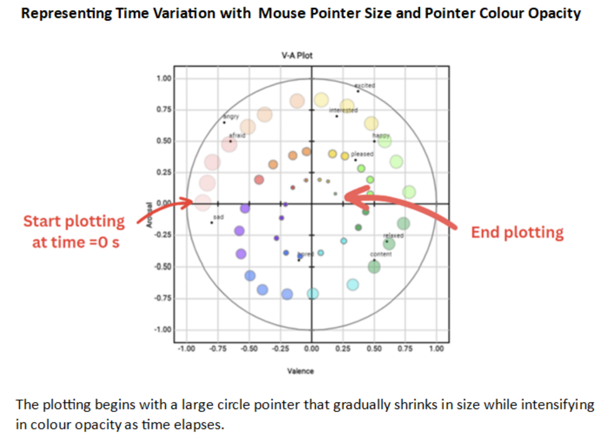
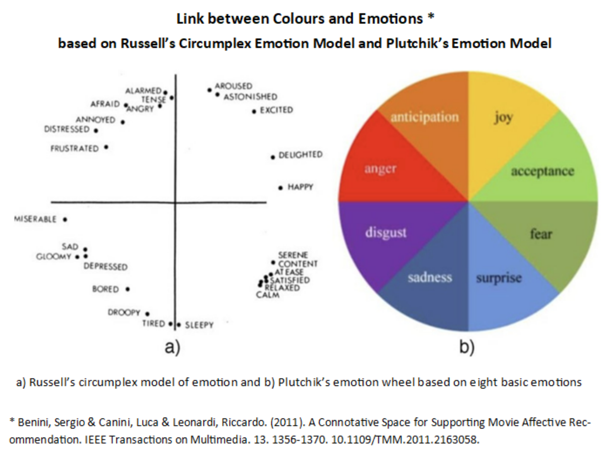

<!DOCTYPE html>
<html>
    <head>
        <title>About Speech Emotion Annotation</title>
    </head>
    <script src="https://kit.fontawesome.com/a076d05399.js" crossorigin="anonymous"></script>
    <link href="aboutStyle.css" rel="stylesheet" type="text/css" />
    </html>
    <body>
    <div class="about_container">
        <h3>Instructions for annotating Emotion in Speech</h3>
        <hr style="height: 2px; background-color:rgb(72, 70, 70);">

        <div class="EM-content">
            <h2><i>Using Discrete/Categorical Emotion Model</i></h2>
            <ol>
                <li>Play a video/ audio file and carefully observe the content, paying attention to the emotions expressed by the speaker or characters.</li>
                <li>Based on the emotions conveyed in the video/audio, choose the most suitable emotion label from the predefined list of emotions, which includes options such as happy, sad, fear, disgust, anger, and surprise. <br> You may also create your own customised emotion list, following the format shown below in the CSV file. </li>
                <li>Upon selecting the emotions that best describe the overall emotion conveyed in the video/audio, please enter the name of the media file to be saved in the designated field.</li>
                <li>Click the "Save as CSV" button to store your annotation. Your input will contribute to the collection and analysis of emotional data in the video/audio.</li>
            </ol>
            <p><strong>Note</strong>: Please strive for accuracy in your annotations, aiming to capture any and all emotions conveyed in the video/audio. If you encounter uncertainty or if multiple emotions are present, feel free to select all the emotions that you perceive, including the primary or most prominent ones.</p>
        
            
            <hr>

            <h2><i>Using One-dimensional (1-D) Emotion Model</i></h2>
            <ol>
                <li>Start playing a video/audio file.</li>
                <li>As you watch or listen to the media file, pay close attention to the emotional qualities expressed by the speaker.</li>
                <li>Interact with one slider at a time, adjusting it to the most appropriate position based on your understanding of the specific emotional dimension.</li>
                <br>
                <ul>
                    <li><strong>Valence slider</strong>: Adjust the "Valence" slider to reflect the pleasantness or unpleasantness of the emotion conveyed. Move it left for negative valence and right for positive valence based on your interpretation of the emotional content.</li><br>
                    <li><strong>Arousal slider</strong>: Adjust the "Arousal" slider to capture the intensity or level of activation of the emotion conveyed. Move it left for low arousal and right for high arousal based on your perception of emotional intensity.</li><br>
                    <li><strong>Dominance slider</strong>: Adjust the "Dominance" slider to indicate the level of control or power associated with the emotion conveyed. Move it left for low dominance (independent) and right for high dominance (dependent) as you perceive shifts in the speaker's perceived control.</li><br>
                </ul>
                <li>Once you have finished watching or listening to the media file, data for each slider dimension (Valence, Arousal, and Dominance) will be recorded automatically. </li>
                <li>Click 'View Data' button to display all the annotated data for the corresponding slider. <br>
                You can proceed to save the current annotated data if you are satisfied with the current values.</li>
                <li>Repeat steps 3-5 for each emotional dimension, adjusting one slider at a time based on your perception.</li>
                <li>Once you have finished annotation, you can save the annotated data of all three emotion dimensions at once. Click the “Save all current values as CSV” button at the bottom.</li>
            </ol>
            <p><strong>Note</strong>: Remember to adjust each slider independently, focusing on one emotional dimension at a time, to accurately capture the perceived intensity, valence, and dominance of the emotions expressed throughout the content.</p>
            <br>
            
            <hr>
            
            <h2><i>Using Two-dimensional (2-D) Emotion Model</i></h2>
            <ol>
                <li>Familiarise yourself with the valence-arousal plot and understand the valence (positivity/negativity) and arousal (intensity) dimensions it represents.<br>
                <strong>Valence</strong> refers to the positivity or negativity of an emotion, while <strong>Arousal </strong> indicates the intensity or level of activation.</li>    </li>
                <li>Start a media player and listen carefully to the speech. Click on the plot to get it started with annotation.</li>
                <li>As the video or audio plays, move your mouse cursor on the valence-arousal plot based on your perception of the emotions expressed. <br> Position the cursor vertically to indicate the arousal (higher at the top, lower at the bottom) and horizontally to represent the valence (positive on the right, negative on the left).</li>
                <li>Continuously adjust your cursor position on the plot to match your evolving perception of the emotions throughout the video or audio. This allows you to capture any shifts or changes in valence and arousal levels.</li>
                <li>After the video or audio ends, Click 'View Data' button to display all the annotated data.</li>
                <li>If you are satisfied with your annotation, Click 'Save as CSV' button to record your valence-arousal annotation.</li>
            </ol>
            <p><strong>Note</strong>: Be as accurate as possible in your annotations, capturing the predominant emotion conveyed. If you are unsure or if multiple emotions are present, focus on the primary or most salient emotion you perceive.</p>

            <br>
             <br><br><br>
            
        </div>        
    </div>
</body>
